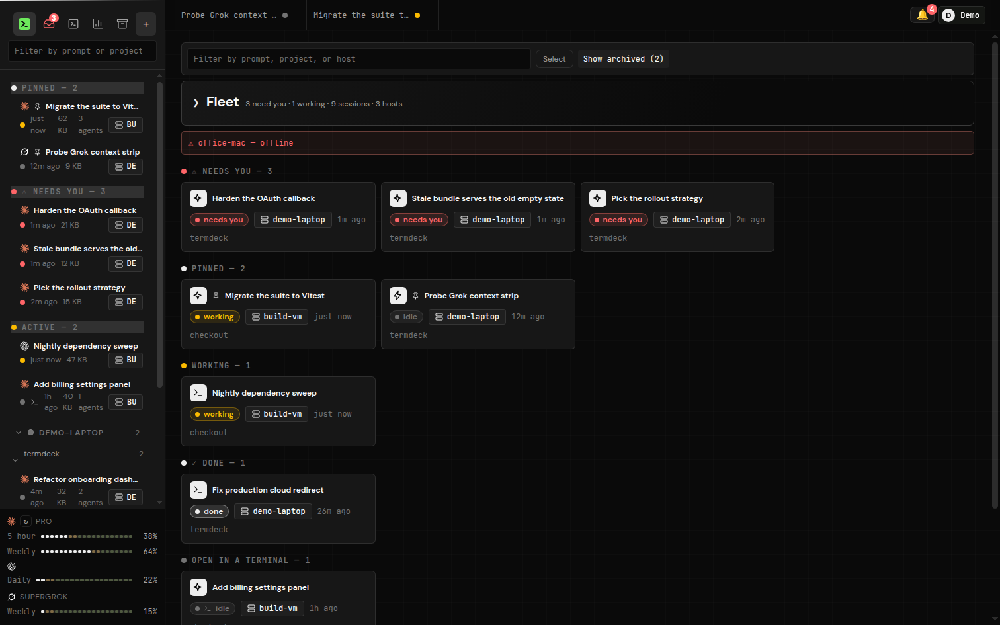

Claude Code, Codex CLI and Grok, on your own machines
The agents are running. Go live your life.
Termdeck is one web board for the coding-agent sessions already running on your laptop, desktop and servers. When a run stops on a tool approval, your phone buzzes. Tap Allow, and it keeps going. Back at your desk, the same session still opens in the terminal.

The minute after
Running the agents was never the hard part.
Approve from your phone
Web Push fires even with no browser open. Allow or Deny right on the notification, or open the session for the full card.
One fleet board
Laptop, desktop, VM, the box under the desk. Every session on every machine, sorted by who is waiting on you.
Every session shows up
Termdeck reads the CLI's own session files, so sessions you started in a terminal months ago are already there and searchable.
Resume in the terminal
A session you drove from your phone still opens with claude --resume or codex resume. Same files, same working directory.
Docked diff review
Changed files with line counts next to the transcript, and a pull request opened from the same panel.
Cost and limit meters
Cost per project, token totals, and rolling and weekly limit pacing, so you see the wall before you hit it.
Three engines, one UI
Pick the engine per chat. Learn the UI once.
| Feature | Claude Code |  Codex CLI |
Grok |
|---|---|---|---|
| Render every past session | Yes | Yes | Yes |
| Drive turns from the browser | Yes | Yes | Yes |
| Inline tool approvals | Yes | Yes | Yes |
| Model and reasoning effort per turn | Yes | Yes | Yes |
| Native plan mode | Yes | Yes | No |
| Resume in its own CLI afterwards | Yes | Yes | Yes |
You bring your own Claude, OpenAI or xAI subscription. Termdeck never resells inference. Compare it with other tools on termdeck.io/vs.
How it works
Two minutes, and no inbound port.
- Sign up at termdeck.io and start the free trial.
- Add a machine. The dashboard gives you a one-line install that carries that machine's token. It works on macOS, Linux and Windows.
- Add a project folder. Its sessions are already there.
curl -fsSL https://termdeck.io/install.sh | TERMDECK_AGENT_TOKEN=agt_... shnpx termdeck-agent install --token agt_...The agent dials out over a WebSocket, so there is no firewall rule, tunnel or VPN on your side. Runs happen on your machine, and a dropped connection only means a viewer went away, not that the run was lost. Full guide: install the agent.
Open source agent
Read what runs on your machine before you run it.
A fixed list, not a shell
The agent answers a typed list of capabilities. Reads stay inside the transcript folders and the open chat's project. capabilities.js is the whole list.
Signed updates
Every release is signed offline. An installed agent takes an update only when the signature and every file hash check out, with a rollback snapshot kept.
Written down
The rules the system relies on are in the repo, each one with the failure that produced it.
FAQ
Questions people ask first.
Do my code and transcripts leave my machine?
No. The agent reads and renders them in place. The control plane is hosted, but it keeps no copy of your conversations. Details in security.
Is there a self-hosted version?
No, on purpose. You connect a machine to your account and drive it through the cloud. Only the agent, the part on your machine, is open source.
Can I take over a session running in a terminal?
Yes. A terminal-attached session streams live in view-only mode, and Take over closes the idle terminal client and hands you the composer.
What does it cost?
Every account starts with a 14-day trial. Plans and prices are on termdeck.io/docs/plans.
termdeck.io
Your agents are already running.
Connect a machine and the sessions on it are on your phone in two minutes.